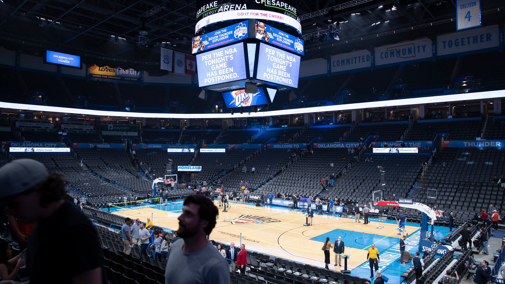
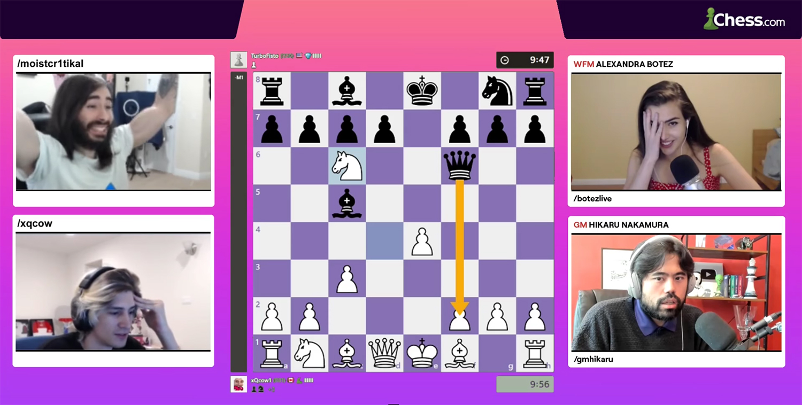
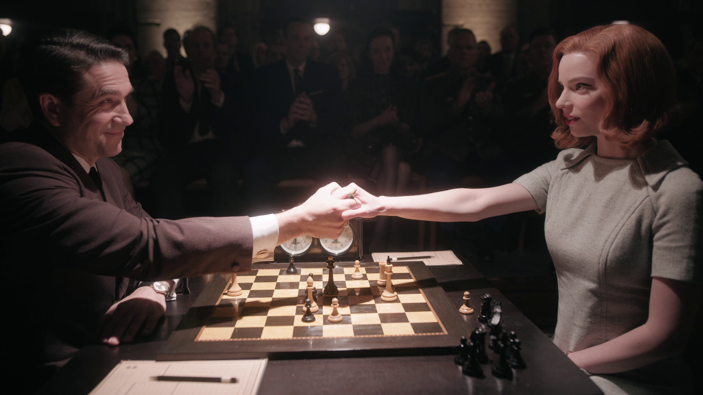
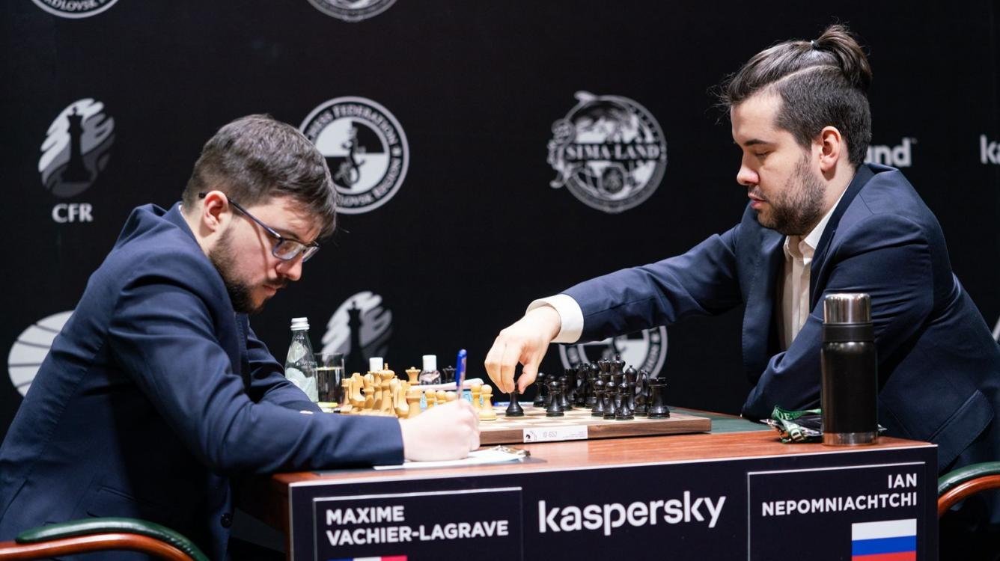
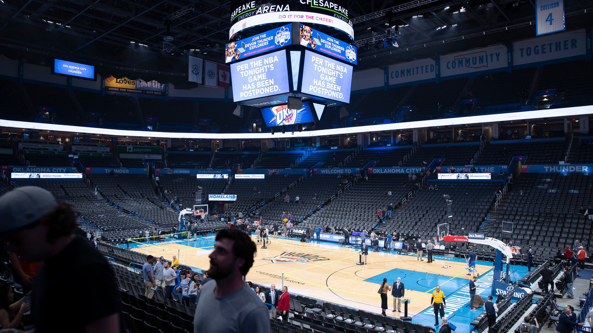
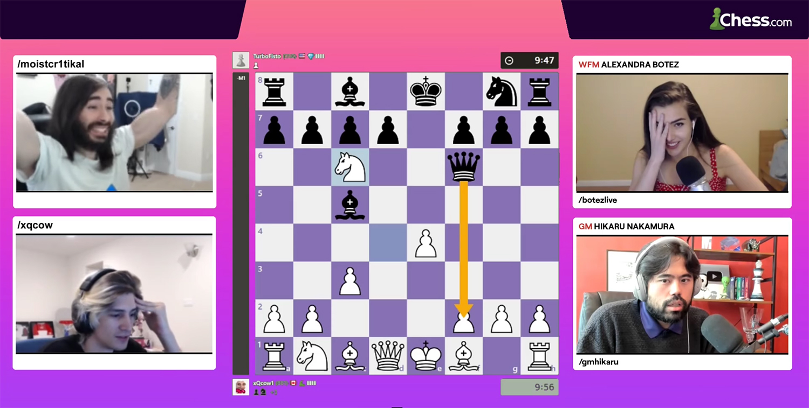
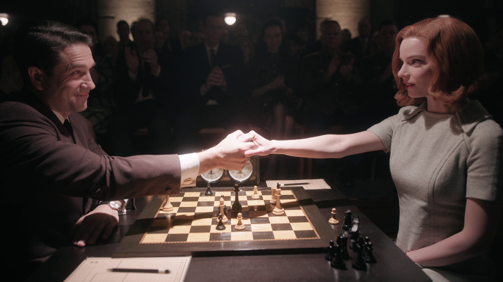
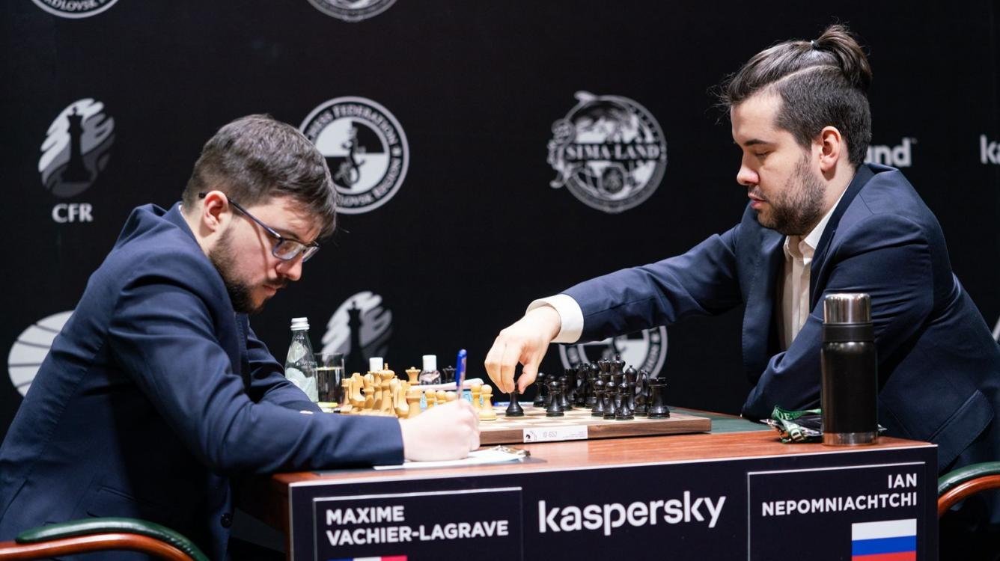

The Queen's Gambit is one of the oldest known openings in chess. It was mentioned in the Göttingen manuscript of 1490 and was later analyzed by Gioachino Greco in the 17th century.
As Wilhelm Steinitz and Siegbert Tarrasch developed chess theory and increased the appreciation of positional play, the Queen's Gambit grew more popular, reaching its zenith in the 1920s and 1930s, and it was played in all but 2 of 34 games in the 1927 World Championship match between José Raúl Capablanca and Alexander Alekhine.
However, this ancient opening has taken on a fresh new significance in recent times.
"The Queen's Gambit", Netflix's 2020 surprise hit, set the record as the most-watched scripted limited series to date on the streaming platform. Within the first 28 days of the miniseries' release, 62 million member accounts had tuned in to watch the coming-of-age period drama.
But what really made the success of the show surprising was not its genre, but rather its subject: the ancient game of chess. What was stereotypically seen as stale, slow and boring was given new life - each game was depicted as a tense & thrilling battle, and the protagonist, Beth Harmon, was equal parts glamourous and relatable.
No wonder that interest in chess exploded after the release of the show. But "The Queen's Gambit" was just one factor in the perfect storm that led to the massive chess boom of 2020.
December 2019 marked the start of the COVID-19 pandemic. The virus was first identified in Wuhan, China, and the World Health Organization declared a Public Health Emergency of International Concern on 30 January 2020.
As more and more states implemented stay-at-home and lockdown orders in response to the ballooning number of cases, people became unable to participate in many of their usual social gatherings and hobbies. Many of these people slowly turned to learning chess, a social activity that could be easily conducted within the confines of their homes.
In March 2020, COVID-19 brought the world of sports to a standstill, as most major events were cancelled or postponed across the globe. The NBA season was suspended; Tokyo 2020 became 2021; Wimbledon was scrapped. Even professional chess wasn't spared, ironically: the Candidates Tournament, an 8-player round robin to determine the next challenger for the World Championship against Magnus Carlsen, was postponed after 7 rounds.
But all these cancellations meant that people were desperate for any sort of entertainment to fill in the idle hours at home. The number of new chess players began to accelerate, and the online chess industry took note. Elite chess tournaments move from the board to the screen, and events such as the April 2020 Magnus Carlsen Invitational received media attention as one of the few sports events during the pandemic.
But little did anyone know that one of the biggest chess tournaments of the year would involve no grandmasters.
The first PogChamps tournament was announced in late May 2020 by Chess.com, the largest online chess server. PogChamps was advertised as an amateur chess tournament, where the participants were internet personalities (primarily Twitch streamers). These were not people who were good at chess - in fact, most had never played the game before. In the 2 months leading up to the tournament, these beginners were coached by titled chess masters, and their triumphs, failures, and trash-talking were all broadcast as part of the show.
While there were some detractors who claimed that the tournament promoted "bad chess" and was displacing "real chess content", no one can argue against the impact that PogChamps had on drawing in new players. People who would never have touched a rook or a knight before watched PogChamps because the participants were professional entertainers that they already knew from other content. The chess wasn't grandmaster level, but it was more relatable to the average player. And blundering a queen is always funny.
While all that would have already made 2020 one of the best years for chess in recent memory, the biggest surprise was yet to come.
"The Queen's Gambit" released on Netflix on October 23 2020. It was nearly never made - director Scott Frank had been attempting to get Walter Tevis' book of the same name adapted since 1992, after acquiring the screenplay rights from Tevis' widow.
The show was critically acclaimed; critics lauded Anya Taylor-Joy's performance as Beth Harmon, as well as the cinematography and production values. Garry Kasparov and Bruce Pandolfini acted as consultants for the show, bringing a level of accuracy rarely seen in depictions of chess on screen.
The series topped the Nielsen's U.S streaming rankings for 3 weeks straight, making it the first series to ever do so. Sales of chess sets increased over a thousand percent, and chess book sales had increased over 600 percent. Notably, more women begun to register for accounts on online chess servers, which is heartening in the traditionally male-dominated world of chess.
The effects of The Queen's Gambit on the popularity of chess persists even up to now, well into the new year.
PogChamps just held their third edition of the tournament in February 2021, this time including not just Twitch streamers, but mainstream celebrities as well, such as actor Rainn Wilson, poker player Daniel Negreanu, and rapper Logic. The Chess category on Twitch.tv surged, becoming (for a period of time) the most watched game ahead of heavy hitters like Fortnite & League of Legends.
Professional chess too saw a surge in viewership for the second half of the Candidates Tournament held in April. And as the chess world gears up for the title match between Candidates winner Ian Nepomniachtchi and reigning world champion Magnus Carlsen, we can expect the frenzy over chess to continue well into the near future.